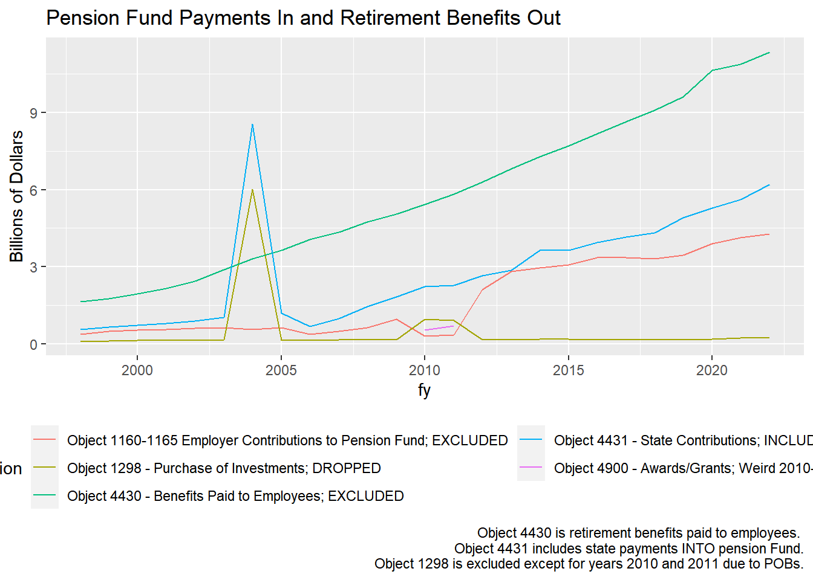

For yearly expenditure calculations, the state contributions to the pension funds (object = 4431) should be the expenditure included for pensions. If trying to look at the bigger fiscal health picture and include unfunded liabilities and in/out flows, then items like purchase of investments and POB spikes in trends that occurred from policy changes should be analyzed and discussed in a separate section. Again, State contributions TO the pension funds are the expenditures BUT an additional graph/discussion on the employer contributions, employee contributions, and benefits paid out should be included and considered for additional context on Illinois’ situation.
Pension expenditures referenced in the analysis are based on state payments to the following pension systems:
Teachers Retirement System (TRS)
New POB bond in 2019: Accelerated Bond Fund paid benefits in advance as lump sum
State Employee Retirement System (SERS)
State University Retirement System (SURS)
Judges Retirement System (JRS)
General Assembly Retirement System (GARS)
Additional context:
For the $10 billion in 2004, they borrowed money and invested it in pension portfolio and hoped that the returns would be greater than the interest on the debt. If returns>interest, then they increased the pension funds and it was a good idea. Otherwise a short term band-aid causes even more problems later. This added a significant amount to the unfunded pension liabilities. In 2010 and 2011, POBs served as a type of general borrowing for the state by borrowing against what was owed to the pension systems and using that revenue that should have funded pensions to instead subsidize the cost of providing core services. Illinois borrowed money (POBs) and used it to pay for government services. A temporary way to fill a budget gap for that 2010 that then costs more in the long run due to increased unfunded liabilities and interest on the borrowed money. - “Basket Case” by Dye 2015
In 2019 lawmakers offered a pension buyout plan where members could opt-out of their future benefits for a lump sum. However, few people participated in the buyout plan and very little savings have occurred so far. The buyout plan has been extended to 2026 in hopes that more people participate in it. Description of Pension Obligation Acceleration Bond at this link. Proceeds of bonds go into pension obligation acceleration fund (which are not included as a revenue source) and the fund is only used to make accelerated pension benefit payments. The pension stabilization fund (0319) is money put into the pension funds to help pay for unfunded liabilities from past poor budgeting decisions.
Data coding details
State pension contributions are largely captured with object=4431. (These are the State expenditures included in analysis)
includes 8 billion payment in 2004 that creates large peak in expenditure graphs
Object 4431 does not capture recent pension stabilization fund which is fund = 0319, object = 1900 and has $300 million investment in FY2022.
Fund=0475 is the Municipal Retirement Fund - Not included because state just helps collect and disperse local pension funds. IMRF is most funded pension fund in Illinois. Fund ends in 2015. All were considered purchase of investments.
IOC objects 1160-1165 are for all retirement expenditures for employers. These are not included in the analysis.
Some expenditures with object=4430 (benefits paid to retirees) were paid for with Pension obligation bond funds (fund == 0825).
In past years, some POB funded expenditures were moved to revenue side. Code logic was unclear. We are no longer doing this as of FY2021.
Other types of pension expenditures to consider when looking at pension funds: Pension obligation acceleration bond, state pension obligation bond reimbursements, pension pickup, accelerated pension buy-out (bond financed funds)
Other items to be aware of that may contain useful pension context:
object = 1298 is for Purchase of Investments and is excluded from analysis. In past analyses, there were a couple of exceptions during 2010 and 2011.
Purchase of Investments captures the pension obligation bonds issued in 2010-2011.
object = 1900 for pension stabilization is under lump sums
object = 1167 and 1168 is for Employer pension contributions but is not used by IOC yet as of FY2022.
object 4900 is awards and grants lump sum
Employer contributions for pensions are excluded from analysis to avoid double counting the cost of pensions. Expenditures with object 4430 for pensions, benefits, and annuities appears in items from funds 0473, 0477, 0479, 0481, (TRS, JRS, SERS, GARS), 0755, 0786, 0787, 0788, 0789, 0799 (deferred compensation plan, GAR excess benefit, JRS excess benefit, SER excess benefit, TRS excess benefit, state university retirement system) are NOT included in the analysis. All are coded with in_ff=0 in the fund_ab_in.xlsx file of funds.
Most of these funds were found by either using CTRL-F with pension related words or scrowllin through code options on the comptroller’s website.
Code
exp_temp <-read_csv("exp_temp.csv")rev_temp <-read_csv("rev_temp.csv")# check what is being included in pensions# funds related to pension contributionspension_funds <-c("0472", "0473", "0477", "0479", "0481", "0755", "0786", "0787", "0788", "0789", "0799")pension_check <- exp_temp %>%mutate(pension =case_when( # object == "4430" & fund == "0825" ~ "Object 4430 - Pension Buyout/Benefits Paid Early", (object=="4430") ~"Object 4430 - Benefits Paid to Employees; EXCLUDED", # pensions, annuities, benefits (object=="4431") ~"Object 4431 - State Contributions; INCLUDED", # 4431 = state payments into pension fund (obj_seq_type >"11590000"& obj_seq_type <"11660000") ~"Object 1160-1165 Employer Contributions to Pension Fund; EXCLUDED",# objects 1159 to 1166 are all considered Retirement by Comptroller TRUE~"0")) %>%# All other observations coded as 0 for non-pension items# recodes specific instances of code anomalies from past years:mutate(pension =case_when( (object=="1298"& fund %in% pension_funds ) ~"Object 1298 - Purchase of Investments; DROPPED", # pension stabilization fund in 2022 # object == "1900" & fund == "0319" ~ "Fund 0319-Pension Stabilization", object =="1900"& fund %in% pension_funds ~"Fund 0319 - Pension Stabilization", object =="4900"& fund %in% pension_funds ~"Object 4900 - Awards/Grants; Weird 2010-2011 values",TRUE~as.character(pension)) ) %>%filter(pension !="0" )pension_check %>%group_by(fy, pension) %>%summarize(expenditure =sum(expenditure, na.rm =TRUE)) %>%ggplot(aes(x=fy, y = expenditure, color = pension)) +geom_line() +labs (title ="Pension Fund Payments In and Retirement Benefits Out", caption ="Object 4430 is retirement benefits paid to employees. Object 4431 includes state payments INTO pension Fund. Object 1998 is excluded except for years 2010 and 2011 due to POBs.")+theme(legend.position ="bottom")+guides(color =guide_legend(nrow=3))

Pension contributions from employees and employers are not included as revenue sources but are useful for understanding the money going into the funds and the money flowing out of the funds. Identifying and graphing employee and employer contributions, as well as benefits paid to retired employees and state contributions was important for checking the items that should and should not be included in the analysis.
Code
# # contributions and benefits paid comparison# ggplot()+# geom_line(data=employee_contributions, aes(x=fy, y=contributions), color=" light green") +# geom_line(data=employer_contributions, aes(x=fy, y=contributions), color="orange") +# # geom_line(data= state_contrib, aes(x=fy, y = expenditure), color = "red")+ # # geom_line(data= benefits_paid, aes(x=fy, y = expenditure), color = "dark blue")+ # labs(title="Pension fund inflows and outflows", # caption = "Blue: object = 4430 for benefits paid out of funds, # red: object = 4431 for state contributions into pension fund, # neon green: employee contributions into the fund,# orange: employer contributions into the fund.", y = "Dollars")pension_picture %>%group_by(fy, pension) %>%summarize(expenditure =sum(expenditure, na.rm =TRUE)) %>%ggplot(aes(x=fy, y = expenditure, color = pension)) +geom_line() +geom_line(data=employee_contributions, aes(x=fy, y=contributions), color="green") +geom_line(data=employer_contributions, aes(x=fy, y=contributions), color="orange") +labs (title ="Pension Fund Payments In and Retirement Benefits Out", caption ="Neon green - employee contributions INTO the fund. Orange - employer contributions INTO the fund.")+theme(legend.position ="bottom", legend.title =element_blank())
Source Code
# Pensions```{r warning = FALSE, message=FALSE}library(tidyverse)library(haven)library(formatR)library(lubridate)library(smooth)library(forecast)library(scales)library(kableExtra)library(ggplot2)library(readxl)library(tidyverse)library(data.table)library(quantmod)library(geofacet)library(janitor)knitr::opts_chunk$set(echo =TRUE, warning =FALSE, message =FALSE)```**For yearly expenditure calculations, the state contributions to the pension funds (object = 4431) should be the expenditure included for pensions. If trying to look at the bigger fiscal health picture and include unfunded liabilities and in/out flows, then items like purchase of investments and POB spikes in trends that occurred from policy changes should be analyzed and discussed in a separate section. Again, State contributions TO the pension funds are the expenditures BUT an additional graph/discussion on the employer contributions, employee contributions, and benefits paid out should be included and considered for additional context on Illinois' situation.**Pension expenditures referenced in the analysis are based on state payments to the following pension systems:- Teachers Retirement System (TRS)- New POB bond in 2019: Accelerated Bond Fund paid benefits in advance as lump sum- State Employee Retirement System (SERS)- State University Retirement System (SURS)- Judges Retirement System (JRS)- General Assembly Retirement System (GARS)**Additional context:**\For the \$10 billion in 2004, they borrowed money and invested it in pension portfolio and hoped that the returns would be greater than the interest on the debt. If returns\>interest, then they increased the pension funds and it was a good idea. Otherwise a short term band-aid causes even more problems later. This added a significant amount to the unfunded pension liabilities. In 2010 and 2011, POBs served as a type of general borrowing for the state by borrowing against what was owed to the pension systems and using that revenue that should have funded pensions to instead subsidize the cost of providing core services. Illinois borrowed money (POBs) and used it to pay for government services. A temporary way to fill a budget gap for that 2010 that then costs more in the long run due to increased unfunded liabilities and interest on the borrowed money. - "Basket Case" by Dye 2015In 2019 lawmakers offered a pension buyout plan where members could opt-out of their future benefits for a lump sum. However, few people participated in the buyout plan and very little savings have occurred so far. The buyout plan has been extended to 2026 in hopes that more people participate in it. Description of Pension Obligation Acceleration Bond at this [link](https://www.ilga.gov/legislation/ilcs/documents/003003300K7.7.htm). Proceeds of bonds go into pension obligation acceleration fund (which are not included as a revenue source) and the fund is only used to make accelerated pension benefit payments. The pension stabilization fund (0319) is money put into the pension funds to help pay for unfunded liabilities from past poor budgeting decisions.**Data coding details**- State pension contributions are largely captured with object=4431. **(These are the State expenditures included in analysis)** - includes 8 billion payment in 2004 that creates large peak in expenditure graphs\ - Object 4431 does not capture recent pension stabilization fund which is fund = 0319, object = 1900 and has \$300 million investment in FY2022.- Fund=0475 is the Municipal Retirement Fund - Not included because state just helps collect and disperse local pension funds. IMRF is most funded pension fund in Illinois. Fund ends in 2015. All were considered purchase of investments.- IOC objects 1160-1165 are for all retirement expenditures for employers. These are not included in the analysis.- Some expenditures with object=4430 (benefits paid to retirees) were paid for with Pension obligation bond funds (fund == 0825).- In past years, some POB funded expenditures were moved to revenue side. Code logic was unclear. We are no longer doing this as of FY2021.- Other types of pension expenditures to consider when looking at pension funds: Pension obligation acceleration bond, state pension obligation bond reimbursements, pension pickup, accelerated pension buy-out (bond financed funds)Other items to be aware of that may contain useful pension context:- object = 1298 is for Purchase of Investments and is excluded from analysis. In past analyses, there were a couple of exceptions during 2010 and 2011. - Purchase of Investments captures the pension obligation bonds issued in 2010-2011.\- object = 1900 for pension stabilization is under lump sums\- object = 1167 and 1168 is for Employer pension contributions but is not used by IOC yet as of FY2022.\- object 4900 is awards and grants lump sumEmployer contributions for pensions are excluded from analysis to avoid double counting the cost of pensions. Expenditures with object 4430 for pensions, benefits, and annuities appears in items from funds 0473, 0477, 0479, 0481, (TRS, JRS, SERS, GARS), 0755, 0786, 0787, 0788, 0789, 0799 (deferred compensation plan, GAR excess benefit, JRS excess benefit, SER excess benefit, TRS excess benefit, state university retirement system) are NOT included in the analysis. All are coded with in_ff=0 in the fund_ab_in.xlsx file of funds.Most of these funds were found by either using CTRL-F with pension related words or scrowllin through code options on the comptroller's website.```{r}exp_temp <-read_csv("exp_temp.csv")rev_temp <-read_csv("rev_temp.csv")# check what is being included in pensions# funds related to pension contributionspension_funds <-c("0472", "0473", "0477", "0479", "0481", "0755", "0786", "0787", "0788", "0789", "0799")pension_check <- exp_temp %>%mutate(pension =case_when( # object == "4430" & fund == "0825" ~ "Object 4430 - Pension Buyout/Benefits Paid Early", (object=="4430") ~"Object 4430 - Benefits Paid to Employees; EXCLUDED", # pensions, annuities, benefits (object=="4431") ~"Object 4431 - State Contributions; INCLUDED", # 4431 = state payments into pension fund (obj_seq_type >"11590000"& obj_seq_type <"11660000") ~"Object 1160-1165 Employer Contributions to Pension Fund; EXCLUDED",# objects 1159 to 1166 are all considered Retirement by Comptroller TRUE~"0")) %>%# All other observations coded as 0 for non-pension items# recodes specific instances of code anomalies from past years:mutate(pension =case_when( (object=="1298"& fund %in% pension_funds ) ~"Object 1298 - Purchase of Investments; DROPPED", # pension stabilization fund in 2022 # object == "1900" & fund == "0319" ~ "Fund 0319-Pension Stabilization", object =="1900"& fund %in% pension_funds ~"Fund 0319 - Pension Stabilization", object =="4900"& fund %in% pension_funds ~"Object 4900 - Awards/Grants; Weird 2010-2011 values",TRUE~as.character(pension)) ) %>%filter(pension !="0" )pension_check %>%group_by(fy, pension) %>%summarize(expenditure =sum(expenditure, na.rm =TRUE)) %>%ggplot(aes(x=fy, y = expenditure, color = pension)) +geom_line() +labs (title ="Pension Fund Payments In and Retirement Benefits Out", caption ="Object 4430 is retirement benefits paid to employees. Object 4431 includes state payments INTO pension Fund. Object 1998 is excluded except for years 2010 and 2011 due to POBs.")+theme(legend.position ="bottom")+guides(color =guide_legend(nrow=3))```Pension contributions from employees and employers are not included as revenue sources but are useful for understanding the money going into the funds and the money flowing out of the funds. Identifying and graphing employee and employer contributions, as well as benefits paid to retired employees and state contributions was important for checking the items that should and should not be included in the analysis.\```{r eval=FALSE}# # contributions and benefits paid comparison# ggplot()+# geom_line(data=employee_contributions, aes(x=fy, y=contributions), color=" light green") +# geom_line(data=employer_contributions, aes(x=fy, y=contributions), color="orange") +# # geom_line(data= state_contrib, aes(x=fy, y = expenditure), color = "red")+ # # geom_line(data= benefits_paid, aes(x=fy, y = expenditure), color = "dark blue")+ # labs(title="Pension fund inflows and outflows", # caption = "Blue: object = 4430 for benefits paid out of funds, # red: object = 4431 for state contributions into pension fund, # neon green: employee contributions into the fund,# orange: employer contributions into the fund.", y = "Dollars")pension_picture %>%group_by(fy, pension) %>%summarize(expenditure =sum(expenditure, na.rm =TRUE)) %>%ggplot(aes(x=fy, y = expenditure, color = pension)) +geom_line() +geom_line(data=employee_contributions, aes(x=fy, y=contributions), color="green") +geom_line(data=employer_contributions, aes(x=fy, y=contributions), color="orange") +labs (title ="Pension Fund Payments In and Retirement Benefits Out", caption ="Neon green - employee contributions INTO the fund. Orange - employer contributions INTO the fund.")+theme(legend.position ="bottom", legend.title =element_blank())```